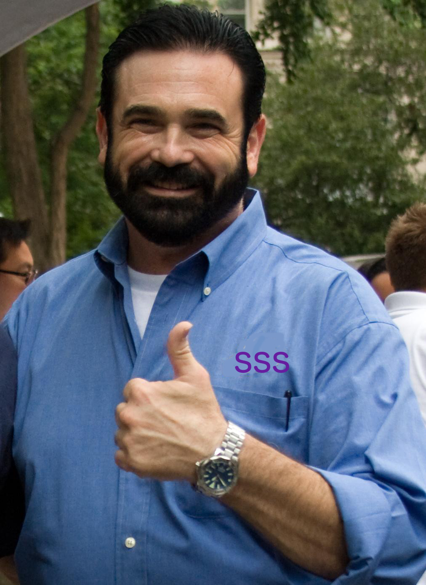

- Our Purpose: Our differentiating value-added strategy is transformational change. Connect people to what’s important in their lives through friendly, reliable, low-cost strategic solutions.
- Our Vision: To become the World's Most multi-faceted, inclusive, and most profitable solution based enterprise.
- Our People: A multi-faceted workforce is a key competitive advantage in the national marketplace. SSS has a network which comprises a variety of backgrounds and experience which form our Corporate Culture.
Adhocracy:
The adhocracy culture places most importance on flexibility, innovation, core-competency. Adaptability and quick reactions to the changing market, competition and external environment is an integral component of corporate strategy in this type of business. Leadership in an adhocracy culture is demonstrated by entrepreneurship and risk taking. The emphasis is always on growth opportunities and employees are encouraged to experiment with new ideas.
Training and Career Development:
At SSS, our people are our company. That's why we're committed to providing employees with award-winning, state-of-the-art learning opportunities to support their career development. We help our people grow and develop during their career by investing millions in employee training and as much as $dozens in tuition reimbursement. In addition, all of our employees receive ongoing performance and career development reviews.
What can you bring to the table? We are the game changers, check the box.